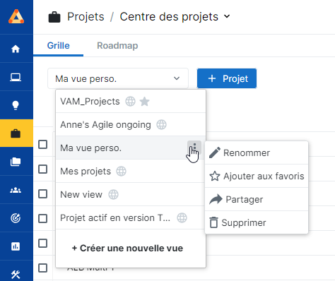

Ce document présente les anomalies qui ont été corrigées ainsi que les améliorations et les nouvelles fonctionnalités qui ont été implémentées dans Sciforma 2024.09, soit dans le produit, soit dans la configuration par défaut, dans Vantage et dans Deliver.
Sciforma 2024.09 est une mise à jour corrective de Sciforma 2024.
Dans le produit, 7 améliorations ont été intégrées et 39 anomalies ont été corrigées.
Dans la configuration par défaut Sciforma, 2 améliorations ont été intégrées et 8 anomalies ont été corrigées.
Dans Vantage, 6 anomalies ont été corrigées.
Dans Deliver, 1 amélioration a été intégrée et 3 anomalies ont été corrigées.
Pour les intégrations, 1 amélioration a été intégrée.
Afin d’accéder aux différentes sections, veuillez cliquer sur les liens suivants :
- Rappel important pour les mises à jour
- Améliorations du produit
- Anomalies corrigées du produit
- Améliorations de la configuration par défaut
- Anomalies corrigées de la configuration par défaut
- Anomalies corrigées de Vantage
- Améliorations de Deliver
- Anomalies corrigées de Deliver
- Prérequis techniques
Rappel important pour les mises à jour
- Pour améliorer les performances des vues affichant l’indice de santé de plusieurs projets, l’indice de santé est désormais précalculé lors de la publication du projet. En conséquence, il faut exécuter la tâche planifiée suivante lors du passage en version 2021.03 (ou ultérieure) afin d’initialiser les valeurs de l’indice de santé projet : Initialiser l’indice de santé statique du projet
Important : Concernant les systèmes dont la commande Publier a été substituée, veuillez ajouter la liste de commandes dédiée au précalcul de l’indice de santé : « Project - Publish Project - Continue - Capture Health Score ».
- À partir de la version 2023.01, afin de supporter l'implémentation de la nouvelle navigation et des nouveaux modules de Vantage, vous devrez de nouveau ajouter l’espace de travail Rapports du projet dans la rubrique Rôles utilisateur du Designer car l’espace de travail Rapports n’existe plus.
Améliorations du produit
Designer
#SCI-4554
Dans le Designer, rubrique Forms (Fiches), boîte de dialogue Edit Gantt Block (Modifier Gantt), onglet Gantt, lorsque l’option “Show all tasks on the project row” (“Afficher toutes les activités sur la ligne du projet”) est cochée, la commande Modifier la couleur, disponible en cliquant droit sur une barre du Gantt dans l’espace de travail Centre des projets, Carte Projet, onglet Gantt, n’est pas affichée.
Feuille de temps (espace de travail natif)
#SCI-4483
Dans l’espace de travail Feuille de temps (natif), la charge prévue de la période active est désormais affichée dans le bouton « Présenter ».
Modifications d’objets/de champs
#SCI-3931
Les transactions du projet peuvent désormais être transférées d’un modèle vers un projet lorsque l’option “Insert Project Transaction” (“Insérer les transactions Projet”) est cochée dans le Designer, rubrique Command Lists (Listes de commandes), élément “Project Creation - New Project Template Insert Template - Continue”.
Version
#SCI-4621
Une nouvelle vue Roadmap a été implémentée dans l’espace de travail Centre des projets ; elle offre une vue d’ensemble de la chronologie des projets.
La grille disponible à gauche contient un tableau listant les projets et certains de leurs attributs (Nom, IS, Début et Fin). Le tableau disponible à droite présente une vue graphique composée d’une seule ligne par projet, où les éléments clés de la chronologie du projet (jalons/gates, références et avancement) sont affichés. Survoler un jalon/une gate affiche une infobulle, indiquant le nom du jalon/de la gate ainsi que la date de début.
Par défaut, la vue Roadmap affiche tous les projets actifs en version Travail pour lesquels l’utilisateur connecté dispose d’un accès en lecture ou en écriture.
Cette version est la première de la vue Roadmap. De nouvelles améliorations seront intégrées dans les prochaines versions, notamment la possibilité de personnaliser les informations telles que celles de la vue Grille (options de filtrage, possibilité de sauvegarder les vues, etc.).
Note : la vue Roadmap est en lecture seule.
#SCI-2998
Dans tous les espaces de travail Centre (Centre des projets, Centre des idées, Centre des actions, Centre des demandes d’évolution, Centre des livrables, Centre des événements et Centre des risques), barre d’outils principale, champ Vues, de nouvelles options sont désormais disponibles lorsque l’utilisateur clique sur le bouton Autre () d’une vue spécifique, ce qui lui permet de sélectionner les commandes suivantes :
- Renommer – Permet de renommer la vue sélectionnée.
Ajouter aux favoris – Permet d’indiquer si la vue est marquée comme « favori ». Une fois qu’une vue a été marquée comme favorite, une étoile grise () est ajoutée après le nom de la vue dans la liste.
- Supprimer des favoris – Permet de supprimer la vue des favoris.
Partager – Permet de partager la vue avec l’ensemble de l’entreprise. Une fois qu’une vue a été partagée, une icône de partage () est ajoutée après le nom de la vue dans la liste.
- Annuler le partage – Permet d’annuler le partage de la vue avec l’ensemble de l’entreprise.
- Supprimer – Permet de supprimer la vue sélectionnée.

Une démonstration est disponible en cliquant sur le lien suivant : Vues partagées.
Visualisation des données
#SCI-4299 (*Ajouté le 03/12/2024)
Dans l'espace de travail Centre des projets , un indicateur est désormais affiché dans l'en-tête lorsqu'une colonne est triée en ordre ascendant ou descendant, ce qui permet à l'utilisateur de reconnaître visuellement que la colonne est triée.
#SCI-4178
Le nouvel espace de travail Ma page d’accueil a été implémenté dans le client HTML5. Ma page d’accueil est généralement la première page que l’utilisateur peut voir lorsqu’il se connecte à Sciforma ; elle a pour but de faire office de point d’entrée principal dans l’application.
L’espace de travail Ma page d’accueil permet à l’utilisateur de consulter les principales informations relatives à son rôle utilisateur dans un seul emplacement, d’accéder à ses principaux espaces de travail en un seul clic et de procéder à des actions rapides.
L’espace de travail Ma page d’accueil est constitué :
- D’un bloc Actions rapides
- D’une série de blocs d’information
Les blocs affichés dans l’espace de travail Ma page d’accueil sont paramétrables par l’administrateur – les paramètres disponibles lui permettent de choisir quels blocs doivent être affichés en fonction des rôles utilisateurs.
Pour plus d’informations, veuillez vous référer à la documentation Ma page d’accueil ou découvrez notre démo de la nouvelle Page d’accueil.
Note : le contenu de Ma page d’accueil est géré par l’administrateur dans l’espace de travail Paramètres système, dossier Paramètres Ma Page d’accueil, onglet Options générales.
Anomalies corrigées du produit
API héritée
#SCI-4671
Dans le Client HTML5, des problèmes de performance pouvaient survenir lorsque l’utilisateur créait des utilisateurs/ressources ou modifiait le calendrier. Cette anomalie a été corrigée ; le temps d’exécution a été optimisé.
Barre d’application
#SCI-4574
Dans l’espace de travail Centre des projets, lorsque l’utilisateur cliquait sur la liste déroulante de sélection des vues, il n’était pas possible de faire défiler la liste vers le bas pour afficher toutes les options disponibles. Cette anomalie a été corrigée.
#SCI-4478
Dans le Designer, rubrique Forms (Fiches), lorsque l’utilisateur modifiait les champs associés à une colonne de grille dans la boîte de dialogue "Fields by Category" ("Champs par catégorie"), une anomalie interne pouvait survenir lorsque les champs affichés dans le client HTML5 ne correspondaient pas aux champs spécifiés dans la boîte de dialogue. Cette anomalie a été corrigée.
Note : cette anomalie peut être évitée dans les versions précédentes en spécifiant le champ principal dans la boîte de dialogue principale "Edit" ("Modifier"), puis en utilisant la boîte de dialogue "Fields by Category" ("Champs par catégorie") pour ne spécifier que le champ de la catégorie non principale.
#SCI-3852
Dans l’espace de travail Centre des projets, lorsque l’utilisateur cliquait sur le bouton Colonnes dans la barre d’outils principale, il ne pouvait pas bénéficier du défilement automatique lorsqu’il essayait de déplacer des colonnes tout en haut ou tout en bas de la liste des colonnes. Cette anomalie a été corrigée.
Commandes
#SCI-4713
Les espaces de travail provenant d’une commande Lien pouvaient être affichés même s’ils ne faisaient pas partie du rôle utilisateur. Cette anomalie a été corrigée.
Designer
#SCI-4754
Dans certains cas, lorsque l’utilisateur lançait le Designer, un message d’erreur s’affichait et certaines formules de champ semblaient incorrectes pour la catégorie « Activité ». Cette anomalie a été corrigée.
#SCI-4647 (Ajouté le 04/10/24)
L’espace de travail Carte Projet était affiché dans la barre de navigation Vantage même si le rôle de l’utilisateur ne lui permettait pas d’y accéder. Cette anomalie a été corrigée.
#SCI-4638
L’option « Max enregistrements » ne fonctionnait pas comme prévu dans les grilles. Cette anomalie a été corrigée.
#SCI-4626
Lorsque l’utilisateur fermait une fenêtre contextuelle, le mauvais onglet était affiché si deux onglets portaient le même nom. Cette anomalie a été corrigée.
#SCI-4576
Dans le Designer, rubrique User Roles (Rôles utilisateur), lorsque l’utilisateur modifiait les droits d’accès, le serveur devait être redémarré pour que les modifications soient prises en compte. Cette anomalie a été corrigée.
#SCI-4568
Après la modification des listes de commandes, les substitutions n’étaient PAS prises en compte avant un certain temps. Cette anomalie a été corrigée.
Feuille de temps (espace de travail natif)
#SCI-4855 (Ajouté le 04/10/24)
La mise à jour des tableaux échouait lors de la mise à jour vers la version 2024.09 de Sciforma. Cette anomalie a été corrigée..
#SCI-4563
Dans l’espace de travail Feuille de temps (natif), les boutons « Présenter semaine », « Présenter mois » et « Présenter période » débordaient lorsque l’utilisateur était connecté en français. Cette anomalie a été corrigée ; le texte a été raccourci.
Localisation
#SCI-4724
Dans les formules, la concaténation de chaînes de caractères ne prenait pas la localisation en compte. Cette anomalie a été corrigée.
Modifications d’objets/de champs
#SCI-4686
Lorsque l’utilisateur faisait défiler le contenu d’une liste déroulante, le contenu de la liste pouvait se mettre à clignoter, voire ne pas s’afficher du tout. Cette anomalie a été corrigée.
#SCI-4660
Dans l’espace de travail Centre des projets, un message d’erreur était parfois affiché lorsque l’utilisateur créait un nouveau projet et sélectionnait l’option « Importer XML ». Cette anomalie a été corrigée.
#SCI-4597
Dans l’espace de travail Gantt multiprojets, un message d’erreur s’affichait parfois lorsque l’utilisateur sélectionnait des projets et ils ne chargeaient pas. Cette anomalie a été corrigée.
#SCI-4579
Dans certains cas, l’utilisateur pouvait rencontrer des difficultés pour accéder à des enregistrements de catégories libres qui étaient déjà verrouillés par l’exécution d’une autre commande. Cette anomalie a été corrigée.
#SCI-4432
Dans l’espace de travail Centre de planification du projet, un message d’erreur était parfois affiché lorsque l’utilisateur sélectionnait un projet. Cette anomalie a été corrigée.
Performance
#SCI-4441
Dans certains cas, lorsque l’utilisateur démarrait son environnement, un message d’erreur était affiché lorsque l’interface utilisateur Vantage était activée. Cette anomalie a été corrigée.
Tâches planifiées
#SCI-2504
Dans certains cas, les tâches planifiées étaient automatiquement annulées après leur prochaine exécution planifiée dans le Designer, rubrique Scheduled Jobs (Tâches planifiées). Cette anomalie a été corrigée.
Visualisation des données
#SCI-4746
Dans l’espace de travail Centre des projets, vue Grille, lorsque l’utilisateur appliquait des filtres dans la boîte de dialogue Filtres, les données n’étaient pas correctement filtrées. Cette anomalie a été corrigée.
#SCI-4721 (Ajouté le 04/10/24)
Une erreur de type « NullPointerException » pouvait se produire sur les projets si l’utilisateur n’avait qu’un accès en lecture. Cette anomalie a été corrigée.
#SCI-4719
Dans l’espace de travail Paramètres système, dossier Paramètres Objets de travail, onglet Éléments de travail, certains paramètres ne fonctionnaient pas correctement. Cette anomalie a été corrigée.
#SCI-4675
Dans l’espace de travail Centre des projets, une fois le processus de création de projet terminé, la barre de chargement était affichée par erreur en bas de la page, même si la Carte Projet avait bien été chargée. Cette anomalie a été corrigée.
#SCI-4663
Dans l’espace de travail Centre des projets, Carte Projet, onglet Rapports, thème Synthèse, rapport CDA Report, fenêtre contextuelle Description, un message d’erreur s’affichait lorsque l’utilisateur essayait de modifier le nom du rapport. Cette anomalie a été corrigée.
#SCI-4655
Dans l’espace de travail Données d’entreprise, onglet Ressources, fenêtre contextuelle Disponibilité, lorsque l’utilisateur saisissait une nouvelle date, celle-ci était automatiquement remplacée par le jour précédent si le fuseau horaire du système avait été modifié au préalable. Cette anomalie a été corrigée.
#SCI-4651
Dans l’espace de travail Centre des projets, dans certains cas, un message d’erreur s’affichait lorsque l’utilisateur cliquait sur le bouton « Ouvrir » disponible à droite du nom des projets et il n’était pas possible d’accéder à la Carte Projet. Cette anomalie a été corrigée.
#SCI-4577
Dans le Designer, rubrique Forms (Fiches), si le nombre de champs inclus dans un contrôle d’affichage « Trier par » ou « Grouper par » était trop important, aucune barre de défilement n’était affichée dans la liste déroulante lorsque les options « Trier par » ou « Grouper par » étaient utilisées dans le client HTML5. Cette anomalie a été corrigée.
#SCI-4572
Dans certains cas, lorsque l’utilisateur bookmarquait une page dans l’application, les sélections n’étaient pas restaurées lorsqu’il utilisait la page bookmarquée si l’interface utilisateur Vantage était activée. Cette anomalie a été corrigée.
#SCI-4571
Dans l’espace de travail Travail, onglet Gantt, lorsque l’utilisateur sélectionnait les commandes « Insérer à gauche » ou « Insérer à droite » pour insérer des colonnes dans le tableau du Gantt, un fond blanc était affiché à la place de la liste des champs. Cette anomalie a été corrigée.
#SCI-4527
L’espace de travail Centre des projets disparaissait par intermittence lorsque l’interface utilisateur Vantage était activée. Cette anomalie a été corrigée.
#SCI-4511 (Ajouté le 04/10/24)
Lorsque des utilisateurs ou des ressources étaient purgés dans la rubrique Purge (Purger) du Designer, ils ne disparaissaient pas immédiatement. Cette anomalie a été corrigée.
#SCI-4504
En raison de certains problèmes, les champs de type Vue sont désormais en lecture seule afin d’éviter les modifications des fiches HTML.
#SCI-4490
Dans la boîte de dialogue Filtres, l’opérateur « contient » était mal orthographié lorsque l’utilisateur était connecté en allemand. Cette anomalie a été corrigée.
#SCI-4444
Dans l’espace de travail Travail, onglet Gantt, boîte de dialogue Mise à jour, lorsque l’utilisateur essayait de sélectionner une date à partir d’un sélecteur de date pour le champ « Date de mise à jour », la sélection se faisait de manière incorrecte sur le jour précédent. Cette anomalie a été corrigée.
#SCI-4439
Dans certains cas, lorsque l’utilisateur envoyait une URL Plan contenant des noms d’onglets à un autre utilisateur de Plan utilisant une langue différente, le lien URL ne fonctionnait pas correctement. Cette anomalie a été corrigée.
#SCI-4435
Dans l’espace de travail Centre des projets, Carte Projet, onglet Gantt, tableau de Gantt, il n’était pas possible de faire glisser des activités non sélectionnées et de les déposer en haut du tableau. Cette anomalie a été corrigée.
#SCI-4395
Dans l’espace de travail Rapports des projets, lorsqu’un filtre Portefeuilles était appliqué dans le sélecteur de projets, il arrivait que l’utilisateur ne puisse visualiser aucun des projets. Cette anomalie a été corrigée.
Améliorations de la configuration par défaut
Centre des projets
#MIL-4996
Dans l’espace de travail Centre des projets, Carte Projet, onglet Gantt, volet Ressources, l’icône Engrenage (), qui s’affichait jusqu’à présent lorsque l’utilisateur passait la souris sur la grille distribuée (comme illustré ci-dessous), a été supprimée pour plus de visibilité.
#MIL-4860
La Carte Projet a été optimisée pour permettre la sélection de plusieurs projets et afficher les différents onglets (par exemple Gantt, Eléments de travail, Ressources, etc.) en vue multiprojets.
La Carte Projet (multiprojets) est conçue pour rationaliser la gestion de projets ; elle fournit des détails sur plusieurs projets et simplifie la navigation dans les modules et les espaces de travail. Elle constitue un point central pour les activités de gestion de projets, permettant aux chefs de projets d’accéder facilement aux informations, aux outils et aux actions nécessaires au bon déroulement des projets.
La Carte Projet (multiprojets) est accessible directement à partir de l’espace de travail Centre des projets. Lorsque deux projets ou plus sont sélectionnés dans l’espace de travail Centre des projets, vue Grille, le bouton Ouvrir la sélection (), disponible sur le côté gauche de la barre d’outils principale, apparaît.
Cliquer sur ce bouton ouvre la Carte Projet (multiprojets), onglet Synthèse, sous-onglet Résumé (multiprojets), avec les projets sélectionnés affichés.
Les autres onglets disponibles dans la Carte Projet ont également été améliorés pour offrir des vues multiprojets, par exemple les onglets Gantt ou Éléments de travail, comme illustré ci-dessous.

Pour plus d’informations, veuillez vous référer à la documentation Carte Projet (multiprojets) ainsi qu'aux divers sujets multiprojets, ou découvrez notre démo de la nouvelle sélection multiprojets.
Anomalies corrigées de la configuration par défaut
Agile
#MIL-4197
Dans l’espace de travail Travail, onglet Agile, vue plein écran Détails de l’itération, onglet Synthèse, volet Détails de l’itération, lorsque l’utilisateur cliquait sur le libellé « Uniquement » d’une carte, tous les éléments du Backlog étaient toujours affichés dans la section Éléments du Backlog restants au lieu des éléments du Backlog dont la ressource était l’utilisateur sélectionné. Cette anomalie a été corrigée.
Budget/Finances
#MIL-4970
Dans l’espace de travail Centre des projets, Carte Projet, onglet Finances, boîte de dialogue Estimation, fenêtre contextuelle Mise à jour de l’estimation à partir du Coût final, la traduction en allemand des options « Toutes périodes » et « Personnalisée » était incorrecte. Cette anomalie a été corrigée.
#MIL-4945
Dans l’espace de travail Centre des projets, Carte Projet, onglet Finances, les boutons « Nouvelle capture » ou « Gérer les captures » ne fonctionnaient pas comme prévu. Cette anomalie a été corrigée.
Éléments de travail
#MIL-4999
Dans l’espace de travail Centre des projets, Carte Projet, onglet Éléments de travail, vue plein écran Éléments de travail, onglet Boîte de réception, vue Détails de l’élément de travail, fenêtre contextuelle Types, la traduction de « Types de livrables globaux » était incorrecte en allemand. Cette anomalie a été corrigée.
#MIL-4979
Dans l’espace de travail Centre des projets, Carte Projet, onglet Éléments de travail, tous les graphiques affichés dans la vue principale étaient affectés si l’utilisateur avait précédemment activé l’option d’affichage « Fermé » dans la vue plein écran Eléments de travail. Cette anomalie a été corrigée.
Espace personnel
#MIL-4675
Dans l’espace de travail Feuille de temps, lorsque l’option d’affichage « Afficher Parent » était activée, le nom des activités n’était pas visible pour certains projets. Cette anomalie a été corrigée.
Général
#MIL-5000
Dans l’espace de travail Paramètres système, dossier Paramètres Objets de travail, onglet Options générales, la traduction de l’option « Granularité des alertes pour les objets de travail » n’était pas correcte en allemand. Cette anomalie a été corrigée.
Gestion de projets
#MIL-4386
Dans l’espace de travail Centre des projets, Carte Projet, onglet Gantt, boîte de dialogue Bulletin du projet, dossier Finances, la barre de navigation temporelle ne fonctionnait pas correctement conformément aux options prédéfinies sélectionnées. Cette anomalie a été corrigée.
Anomalies corrigées de Vantage
Connecteur de données
#VAN-1257
Dans Vantage, dans certains cas, les projets créés dans Deliver n’apparaissaient pas dans Plan. Cela était dû à un dysfonctionnement du connecteur de données entre Deliver et Plan. Cette anomalie a été corrigée.
#VAN-1233
Dans Vantage, lorsque l’utilisateur mettait à jour des activités dans Deliver, l’ordre des activités était incorrect dans Plan. Cela était dû à une mise à jour silencieuse du champ « parent_task », qui entraînait le déplacement des activités dans une mauvaise position. Cette anomalie a été corrigée.
#VAN-751
Dans Vantage, dans certains cas, les activités créées dans Deliver ne s’affichaient pas dans Plan. Cette anomalie a été corrigée.
Gestion de projets
#VAN-1213
Dans l’espace de travail Travail, onglet Perso., certaines cellules étaient incorrectement affichées comme étant vides ou avec une valeur nulle dans le tableau Ressources demandées. Cette anomalie a été corrigée.
#VAN-1167
Dans l’espace de travail Travail, onglet Gantt, lorsque l’utilisateur mettait à jour certaines activités ou les détails d’un projet, les activités disparaissaient du projet. Cette anomalie a été corrigée.
Talend
#SCI-1230
Lorsque l’utilisateur exécutait des tâches Talend pour mettre à jour des activités, il arrivait, dans certains cas, que des projets perdent toutes leurs activités.
Améliorations de Deliver
Admin O3
#DELIVER-855
Dans Deliver, l’utilisateur peut désormais contrôler l’accès aux champs utilisateur dans l’administration O3 grâce à un champ de contrainte. En appliquant une contrainte sur les champs utilisateur dans l’administration O3, il est possible de choisir entre deux options dans le menu déroulant des champs utilisateur :
- Afficher les utilisateurs ayant un accès en lecture à l’objet.
- Afficher tous les utilisateurs du répertoire.
Pour plus d’informations, veuillez vous référer à la documentation « Comment appliquer une contrainte sur un champ utilisateur ».
Anomalies corrigées de Deliver
Gridboard
#DELIVER-1113
Dans Deliver, l’espacement du texte « normal » présentait un défaut : la hauteur de ligne des paragraphes était trop importante dans le bloc Whiteboard de la carte. Cette anomalie a été corrigée. La hauteur des lignes a été réduite, ce qui permet de mieux différencier les paragraphes.
#DELIVER-1067
Dans Deliver, dans certains cas, les pièces jointes pouvaient disparaître des activités. Cette anomalie a été corrigée ; tous les documents ont été restaurés.
Intégration ARM
#DELIVER-1035
Dans Deliver, certaines allocations pourraient être manquantes pour tous les utilisateurs sur certains projets. Cette anomalie a été corrigée grâce à une augmentation du délai d’attente.
Améliorations des intégrations
API Plan
#INT-797 (Ajouté le 10/16/24)
Un nouveau endpoint a été implémenté pour supprimer les plages de travail du calendrier pour une ressource spécifique.
Prérequis techniques
Des modifications et des ajouts sont fréquemment apportés à l’ensemble des versions spécifiques des systèmes d’exploitation, serveurs d’application et serveurs de bases de données pour lesquels Sciforma a été testé et certifié. Veuillez contacter nos équipes pour connaître les dernières informations à ce sujet.
Note : l’horloge système de l’utilisateur doit être régulièrement et précisément synchronisée avec l’horloge internet.
Serveurs
- Serveur d’application : Apache Tomcat 9 avec Oracle Java 8 ou OpenJDK
- Serveur de données : PostgreSQL 12, PostgreSQL 14
Client HTML5
- Résolution d’écran : 1 366 x 768 (minimum technique), 1 600 x 1 050 (minimum recommandé), 1 920 x 1 080 ou plus (généralement recommandé).
- 4 Go de RAM affectée au minimum (8 Go recommandés).
- Navigateur
- Microsoft Edge
- Microsoft Internet Explorer 10 ou 11
- Google Chrome
- Mozilla Firefox
- Apple Safari
Designer Sciforma
- Langue recommandée : anglais
- Résolution d’écran : 1 366 x 768
- 4 Go de RAM affectée au minimum
- Espace disque : 200 Mo minimum disponible pour Sciforma.
- Oracle Java 8 ou OpenJDK 8
- Systèmes d’exploitation :
- Windows 7, 8.1, 10 ou 11
- Mac OS X Lion ou version plus récente
- Alpine Linux 3.16.1
API REST
- Langue supportée : anglais
Application mobile Feuilles de temps
- Hébergée par Sciforma
- Version produit : 2022.08 et versions suivantes
Plateforme Vantage
Les utilisateurs devront autoriser les cookies de tierces parties pour pouvoir utiliser Vantage. Pour plus d’informations concernant les cookies de tierces parties, veuillez vous référer à la documentation « Comment autoriser les cookies de tiers ».
Pour les clients ayant souscrit à Plan uniquement
- Installation :
- POD 11 est requis si l’installation est hébergée par Sciforma
- Un serveur Hydra est requis si l’installation est sur site
- Version produit : 2023.01 et versions suivantes
Pour les clients ayant souscrit à Plan et Deliver
- Installation :
- POD 11 est requis si l’installation est hébergée par Sciforma
- Un serveur Hydra est requis si l’installation est sur site
- HPV2 activé sur les modules Deliver (activé par défaut pour tous les nouveaux clients Deliver à partir du 3e trimestre 2021)
- Version produit : 2023.01 et versions suivantes
- Les utilisateurs devront autoriser les cookies de tierces parties dans leur navigateur
Limitations
Le connecteur de données :
- ne fonctionne pas dans les environnements avec répartition de charge (load balanced).
- n’est pas compatible avec les tâches planifiées dans le cloud.
- n’est pas compatible avec les serveurs API dédiés.
- n’est pas compatible avec l’API Java.